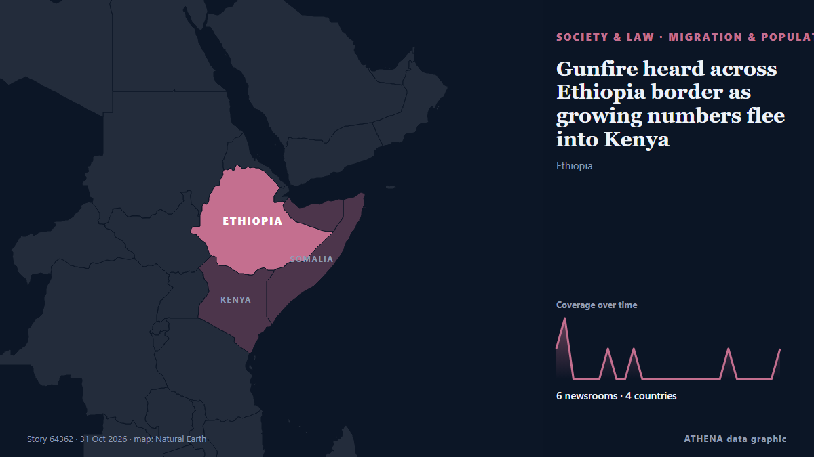

Μετανάστευση & πληθυσμός
| 18 Οκτ | 0 |
|---|---|
| 19 Οκτ | 0 |
| 20 Οκτ | 0 |
| 21 Οκτ | 0 |
| 22 Οκτ | 0 |
| 23 Οκτ | 0 |
| 24 Οκτ | 1 |
| 25 Οκτ | 1 |
| 26 Οκτ | 1 |
| 27 Οκτ | 3 |
| 28 Οκτ | 1 |
| 29 Οκτ | 3 |
| 30 Οκτ | 4 |
| 31 Οκτ | 0 |
Οι τίτλοι των ειδήσεων παρουσιάζονται στα αγγλικά, όπως δημοσιεύτηκαν.

Gunfire heard across Ethiopia border as growing numbers flee into Kenya
Gunfire echoes across the Ethiopia-Kenya border in Moyale, as violence drives thousands to flee into Kenya. από Africanews (English)
Brunson's call for year-round drills short on details
Seoul’s military says it will maintain its two major annual exercises with Washington while continuing joint training throughout the year, following a call by the top U.S. commander in South Korea… από The Korea Times
Details of thousands of US immigration agents leaked in major hack
A group called the Department of Peace released information on more than 41,000 DHS staff. από BBC News
China’s families are now supporting more old people than kids
The latest figures mark a major milestone as Beijing grapples with an ageing population. από BBC Business
US rejects record 1 in 4 South Korean visitor visa applicants, over four times Japan's rate
The U.S. turned down nearly 1 in 4 South Korean applicants for business and tourist visas in the year to September 2025, a record high and more than four times the rate for Japanese applicants. από VnExpress International
Malaysia officers detain couple attempting to bring over $700,000 in undeclared cash to Singapore
Malaysian border officers detained a husband and wife at the Causeway checkpoint in Johor Bahru on Oct. από VnExpress International
US plans to deport detained Afghans to Pakistan: Bloomberg
Afghans being held by U.S. Immigration and Customs Enforcement have been notified that they could be deported to Pakistan, according to the report. από Amu TV
Alex Pretti's family demands answers, says DOJ withholding info
Nine months after Alex Pretti was shot and killed by federal immigration agents in Minneapolis, his parents are still demanding answers. από The Hill